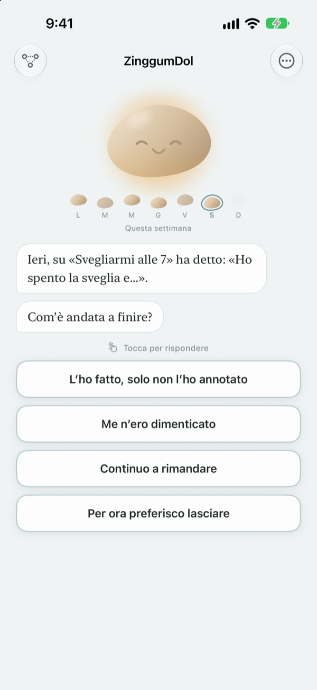
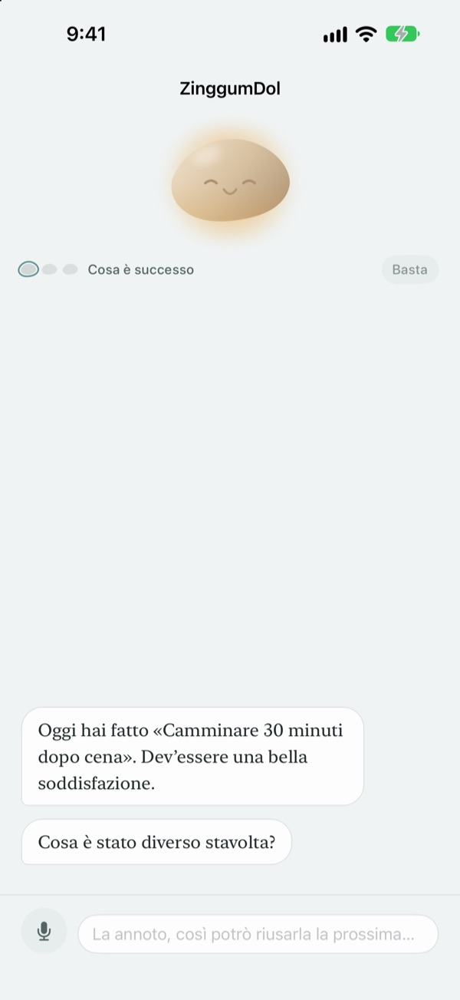
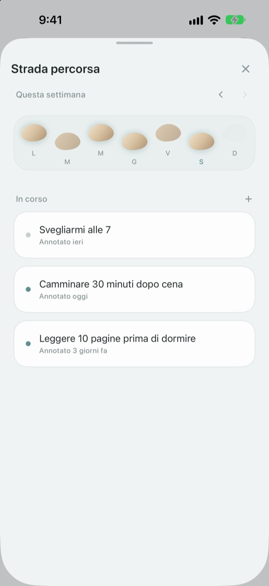
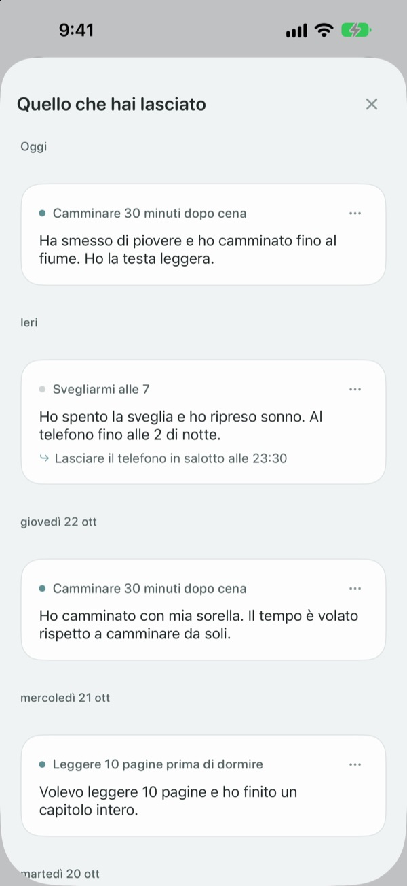

Un passo falso non vuol dire
essere caduti nel torrente
Il giorno in cui manchi l'obiettivo, è il sassolino a parlarti per primo. Ti chiede cosa è successo, non cosa hai sbagliato, e ti restituisce i fatti e lo stato d'animo ben separati.
Parlare, scrivere e vedere la tua strada è gratis. Niente registrazione né pubblicità.

Parla con il sassolino
Oggi volevi fare una passeggiata la sera e non ce l'hai fatta. Scegli una risposta o scrivi la tua: il sassolino risponde esattamente come nell'app.
Quando una giornata va storta, te la prendi con te stesso?
La sera in cui salti l'allenamento, il primo pensiero di solito è «cosa c'è che non va in me?». A guardar meglio c'erano gli straordinari, pioveva, eri sfinito. ZinggumDol ti chiede cosa è successo e come ti senti in due momenti distinti, poi mette le due cose una accanto all'altra. Quando vedi che sono state le circostanze e non la tua forza di volontà, trovare il prossimo piccolo passo diventa più facile.
Il sassolino parla per primo
Fissa un obiettivo e il sassolino terrà d'occhio i giorni in cui ce l'hai fatta e quelli in cui ti sei bloccato. Quando un giorno ti sfugge, chiede «cosa è successo?» invece di «perché no?», e si ricorda quello che gli hai raccontato l'ultima volta.
Nei giorni in cui scrivere è troppo, dillo ad alta voce. La voce viene riconosciuta sul dispositivo e le registrazioni non vengono mai salvate.

I tuoi giorni come pietre per attraversare il torrente
Ogni settimana si stende come una fila di pietre. Anche i giorni in cui non ci hai messo piede restano lì; non si cancella niente.
Anche con un buco o due, vedi che la strada continua.

Rileggi quello che hai scritto
Cosa è successo, come ti sei sentito e cosa proverai la prossima volta si raccolgono per data. Rileggi un giorno in cui ti eri bloccato allo stesso modo e vedrai cosa ha funzionato.
Un widget mostra una frase del sassolino nella schermata Home, e un promemoria all'ora che scegli ti invita a ripensare alla giornata.

Per iniziare bastano tre passi
- 1
Scrivi un obiettivo
Per esempio «Camminare 30 minuti dopo cena».
- 2
Apri l'app a fine giornata
Il sassolino ti chiede com'è andata. Con un promemoria non te ne dimentichi.
- 3
Tocca o scrivi la risposta
Puoi fermarti quando vuoi con
Per ora preferisco lasciare.
Come va una conversazione
- Cosa è successo
- Solo i fatti: cosa si è messo di mezzo
- Come ti senti
- Come ti senti adesso, su una scala di cinque
- Ripensarci
- Il sassolino ti restituisce i fatti e lo stato d'animo, separati
- Prossimo passo
- Scegli tu qualcosa di piccolo: cinque minuti bastano
- Conclusione
- In una giornata davvero pesante non chiede altro e ti propone di riposare
Puoi uscire in qualsiasi momento, e quello che hai detto fino ad allora resta salvato.
Parlare e scrivere è gratis. Pro se vuoi di più.
Gratis
- Tutte le conversazioni con il sassolino
- Fino a tre obiettivi
- Parlare invece di scrivere
- La tua strada e tutto ciò che hai scritto
- Widget e promemoria giornaliero
- Blocco con codice
ZinggumDol Pro
- Tutti gli obiettivi che vuoi
- Sei finiture del sassolino tra cui scegliere
- Esportazione delle note in un file di testo
Si compra una volta e resta tuo. Non è un abbonamento.
Nessuna schermata di pagamento compare a metà conversazione. Su un nuovo dispositivo o dopo una reinstallazione, tocca Ripristina acquisti in Impostazioni.
Domande frequenti
Devo spiegare ogni giorno mancato?
No. Tocca Per ora preferisco lasciare in qualsiasi momento e la conversazione finisce lì. Quello che hai detto resta salvato, così puoi riprendere più tardi.
L'ho fatto, ma l'app dice di no.
Tocca L’ho fatto, solo non l’ho annotato. Il sassolino accetta la correzione e ti chiede invece cosa ti ha aiutato. Quello che ha funzionato viene salvato e te lo ricorderà la prossima volta che ti blocchi.
Dove finisce quello che dico ad alta voce?
La tua voce diventa testo sul dispositivo e la registrazione non viene mai salvata. Sui dispositivi compatibili le frasi vengono anche sistemate per leggersi meglio, sempre sul dispositivo.
Quanti obiettivi posso avere?
Tre gratis. Quando hai finito con uno, usa Lascia andare in Strada percorsa per liberare un posto. Per averne più di tre serve ZinggumDol Pro.
ZinggumDol Pro è un abbonamento?
No. Paghi una volta e resta tuo. Su un nuovo dispositivo o dopo una reinstallazione, tocca Ripristina acquisti in Impostazioni.
Qualcun altro può leggere il mio diario?
Non c'è nessun account. Le tue note stanno solo sul tuo dispositivo e nel tuo iCloud, e in Impostazioni puoi bloccare l'app con un codice. Quello che scrivi non viene mai inviato allo sviluppatore. Puoi anche disattivare le statistiche d'uso anonime in Impostazioni.
Come cambio l'orario del promemoria?
In Promemoria giornaliero, dentro Impostazioni, lo attivi o disattivi e scegli l'orario.
Il sassolino mi ricorda anche i successi?
Sì. Si ricorda cosa ti ha aiutato e, in una giornata difficile, ti richiama alla mente qualcosa che sei riuscito a fare di recente.
Come cancello tutto?
Tocca Cancella tutte le note in Impostazioni. Obiettivi e note spariscono per sempre, anche sugli altri dispositivi collegati tramite iCloud. Impostazioni e acquisti restano. Con Pro puoi prima tenerne una copia con Esporta note.
Come posso contattarvi?
Da «Invia feedback» nelle Impostazioni dell'app, oppure per email all'indirizzo qui sotto.
Domande o suggerimenti? Scrivi a leeo@kakao.com.